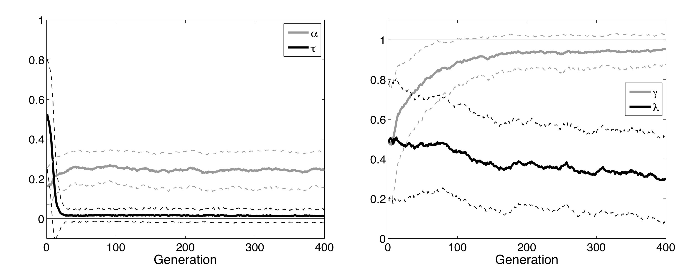

Chapter 8. Multiple Agents
Contents
Chapter 8. Multiple Agents#
Contents#
Evolutionary algorithms
Game theory
Evolutionary game theory
Evolutionary Algorithms#
Our brain is a product of the long history of evolution. In order to understand the present organization and functioning of our brain, it is mandatory to look back into its evolutionary history.
Learning and evolution are complementary mechanisms for adaptation in different time and spatial scales. Learning happens within the lifetime of each single agent, within days to seconds. Evolution occurs across multiple generations of a group of agents constituting a species or a colony.
The mechanisms of learning in the brain, such as the network architecture, dynamics of neurons, and synaptic plasticity rules, are shaped by evolution to suite the features of the environment and the agents’ sensory-motor sytems. Learning can also affect the course of evolution, by providing a wider variety of phenotypes through interaction with the physical and social environments.
Evolutionary algorithms are a class of adaptation/optimization algorithms that mimick the process of biological evolution. The major components are:
diversity in population
selection by fitness
variation by mutation/crossover
Compared to other optimization methods like Newton’s method or gradient descent, their major features are
global optimization
little assumption on the objective function
no gradient computation
Variants of evolutionary algorithms#
Genetic algorithm (GA) (Holland 1976)
binary coding
Evolutionary strategy (Rechenberg & Schwefel 1965)
real numbers
Evolutionary programming (Fogel 1966)
genotype is a finite state machine
Genetic programming (GP) (Koza 1992)
phenotype is a program
Genotype/phenotype coding#
Binary coding: \(b_N,...,b_1\) $\( x = \sum_{i=1}^N b_n 2^{n–1} \)$ Some flip of a bit can cuase a big jump.
Real numbers: \((x_1,...,x_N)\)
Genotype to phenotype mapping
input to a fitness function
parameters of a controller for behavior
Selection#
Roulett wheel selection (RWS): The selection probability \(p_i\) for an individual of fitness \(f_i\) is given by $\( p_i = \frac{f_i}{\sum_{i=1}^P f_i} \)\( where \)P\( is the population size. All \)f_i$ have to be non-negative.
Selection by ranking: $\( p_i \propto P - rank_i \)$
Tournament selection: Keep winners of subsets made of \(k\) individuals
Mutation#
Binary coding: random filp of each bit
Real coding: add random noise, e.g. Gaussian: \(x’ = x + \c{N}(0,\sigma^2)\)
Crossover#
Binary coding: spliciing of bit sequences
Blend crossover: $\( x’ \in [x_1–\alpha(x_2–x_1), x_2+\alpha(x_2–x_1)] \)$
Sampling from parents’ distribution
import numpy as np
import matplotlib.pyplot as plt
%matplotlib inline
from mpl_toolkits.mplot3d import Axes3D # for 3D plotting
class EvoAlg:
"""A basic class of evolutionary algorithms"""
def __init__(self, fitfun, genes, amut=0.1, pcross=0.1):
"""Create a new population
genes: (P,C) array of int or float
sigma: mutation size"""
self.fitfun = fitfun # fitness function
self.genes = np.array(genes) # initial genotypes
self.P = self.genes.shape[0] # population size
self.C = self.genes.shape[1] # genetic code length
self.amut = amut # mutation amplitude
self.pcross = pcross # crossover probability
self.fits = np.zeros(self.P) # individual fitnesses
self.best = [] # current best solution
self.record = [] # record of best fitness
def evaluate(self):
"""Evaluate individuals"""
for i, g in enumerate(self.genes):
self.fits[i] = self.fitfun(g)
self.best = self.genes[np.argmax(self.fits)] # best solution
self.record.append(max(self.fits)) # record best fitness
def select(self):
"""Roulette selection"""
prob = self.fits - min(self.fits) # make sure non-negative
prob = prob/sum(prob) # normalize
selected = np.zeros(self.P, dtype=np.int) # indices of selected
for i in range(self.P):
selected[i] = list(np.random.multinomial(1,prob)).index(1) # multinulli
self.genes = self.genes[selected] # update the genome
def crossover(self, pcross=None):
"""Point crossover"""
if pcross is None:
pcross = self.pcross # use the default
# make random pairs (assume even population)
pairs = np.random.permutation(self.P).reshape((-1,2))
ncross = int(self.P*pcross) # number of crossed pairs
for p, q in pairs[:ncross]:
#if np.random.random() > self.pcross:
# break # no crossover
cp = np.random.randint(self.C-1) + 1 # cross point
#print(p, q, cp)
gene0 = np.r_[self.genes[p,:cp], self.genes[q,cp:]]
gene1 = np.r_[self.genes[q,:cp], self.genes[p,cp:]]
self.genes[p] = gene0
self.genes[q] = gene1
def mutate(self, amut=None):
"""Mutation by gaussian noise"""
if amut is None:
amut = self.amut # use the default
self.genes += amut*np.random.randn(self.P, self.C)
def generation(self, amut=None, pcross=None):
"""One generation"""
self.evaluate()
self.select()
self.crossover(pcross)
self.mutate(amut)
return self.fits # fitness distribution
def evolve(self, gen=100, amut=None, pcross=None):
"""Evolve multiple generations"""
for t in range(gen):
self.generation(amut, pcross)
return self.record # record of best fitness
# Example of Ex-Or neural network
def exor_net(w):
"""Fitness of 2-2-1 network to ExOr; w[9]"""
X = np.array([[0,0], [0,1], [1,0], [1,1]]) # input
T = np.array([0, 1, 1, 0]) # target
w = w.reshape((3,3)) # 3 units with bias and two weights
err = 0
for x, t in zip(X, T):
h = 1/(1+np.exp(-(w[:2,0] + w[:2,1:]@x))) # hidden units
y = w[-1,0] + np.dot(w[-1,1:],h) # output
err += (y - t)**2
#print(h, y, t)
return 1 - err # fitness
# create an instance of evolving ExOr network
evexor = EvoAlg(exor_net, genes=np.random.randn(100,9), amut=0.05, pcross=0.05)
# Run one generation
fits = evexor.generation()
plt.hist(fits)
plt.xlabel("fitness");
/var/folders/6k/5jhd3ffj5h796v6ts63gjksh0000gn/T/ipykernel_36916/1531073698.py:29: DeprecationWarning: `np.int` is a deprecated alias for the builtin `int`. To silence this warning, use `int` by itself. Doing this will not modify any behavior and is safe. When replacing `np.int`, you may wish to use e.g. `np.int64` or `np.int32` to specify the precision. If you wish to review your current use, check the release note link for additional information.
Deprecated in NumPy 1.20; for more details and guidance: https://numpy.org/devdocs/release/1.20.0-notes.html#deprecations
selected = np.zeros(self.P, dtype=np.int) # indices of selected
# Visualize weight distribution
evexor.evaluate() #
for i in range(3):
plt.subplot(1,3,i+1) # plot input weight pairs
plt.scatter(evexor.genes[:,3*i+1], evexor.genes[:,3*i+2], c=evexor.fits);
plt.axis('square')
plt.colorbar();
# Evolve generations
# You may need to tun this many times, or restart if gets stuck
record = evexor.evolve(amut=0.05, pcross=0.05)
plt.plot(record)
plt.xlabel("generation"); plt.ylabel("fitness");
/var/folders/6k/5jhd3ffj5h796v6ts63gjksh0000gn/T/ipykernel_36916/1531073698.py:29: DeprecationWarning: `np.int` is a deprecated alias for the builtin `int`. To silence this warning, use `int` by itself. Doing this will not modify any behavior and is safe. When replacing `np.int`, you may wish to use e.g. `np.int64` or `np.int32` to specify the precision. If you wish to review your current use, check the release note link for additional information.
Deprecated in NumPy 1.20; for more details and guidance: https://numpy.org/devdocs/release/1.20.0-notes.html#deprecations
selected = np.zeros(self.P, dtype=np.int) # indices of selected
Learning and evolution#
Most learning algorithms have some parameters that need to be tuned. In reinforcement learning, design of the reward function is a critical issue. One way to design them is to apply an evolutionary algorithm.
Elfwing et al. (2011) developed a distributed evolutionary framework for a group of robots and demonstrated that reward functions as well as reinforcement learning paramters can be optimized for the task of survival and reproduction.
Evolution of reward functions for finding a battery pack in the survival task (left) and for the face of another robot in the mating task (right).
 Evolution of parameters for reinforcement learning: \(\alpha\): learning rate; \(\tau\): temperature for exploration; \(\gamma\): temporal discounting; \(\lambda\): eligibility trace decay.
The mechanisms for learning, such as network architecutres and synaptic plasticity rules, are also products of evolution. Niv et al. (2002) showed in a reinforcement learning task that reward-dependent plastcity rule can be evoloved.
Game Theory#
Game theory is a mathematical framework for modeling the interactions among multiple agents.
In game theory, what we call agents in reinforcement learning is called players, policy is called strategy, and reward or fitness is called pay-off.
player \(i \in I = \{1,...,n\}\)
pure strategy \(s \in S = \{1,...,m\}\)
pure strategy profile for all players (\(m^n\) cases): $\( \b{s} = (s_1,...,s_n) \)$
payoff for player \(i\): $\( \pi_i(\b{s}) = \pi_i(s_1,...,s_n) \)$
payoff function for all players: $\( \pi(\b{s}) = (\pi_1(\b{s}),...,\pi_n(\b{s})) \)$
Example: Prisoner’s dilemma#
Two prisoners are under interrogation. They can cooperate by remaining silent to be discharged with no punishment. If both defect and tell the truth, they are each given a small punshment. If only one of them defects for plea bargaining, he/she is given a small reward while the other who tries to cooperate by remaining silent is given a big punishment.
you get/buddy gets |
buddy cooperates |
buddy defects |
|---|---|---|
you cooperate |
0 / 0 |
-4/1 |
you defect |
1 / -4 |
-1 / -1 |
What is the best thing to do in this case? Is cooperation a viable strategy?
Mixted strategy#
A player’s strategy can be stochastic. That is called mixed strategy in game theory.
mixed strategy : probability of pure strategies $\(\b{x} = (x_{1},...,x_{m}) \)$
mixed strategy profile for all players: $\(X = \mat{\b{x}_1 \\ \vdots \\ \b{x}_n} = \mat{x_{11} & \cdots & x_{1m}\\ \vdots & & \vdots\\ x_{n1} & \cdots & x_{nm}}\)$
probability of a pure strategy profile \(\b{s}\): $\( x(\b{s}) = p(s_1,...,s_n|X) = x_{1,s_1}\cdots x_{n,s_n} \)$
payoff for player \(i\) under mixed strategy prifile \(X\): $\( u_i(X) = \sum_\b{s} x(\b{s}) \pi_i(\b{s}) = \sum_\b{s} x_{1,s_1}\cdots x_{n,s_n} \pi_i(s_1,...,s_n) \)$
combined payoff function $\( \b{u}(X) = (u_1(X),...,u_n(X)) \)$
Two-Player Game#
Pay-off matrix for row player $\( A: a_{s_1,s_2}=\pi_1(s_1,s_2) \)\( Pay-off matrix for *column player* \)\( B: b_{s_1,s_2}=\pi_2(s_1,s_2) \)$
Examples#
Prisoner’s dilemma: \(S=\{cooperate, defect\}\) $\( A = \mat{0 & -4 \\ 1 & -1}, \ B = \mat{0 & 1 \\ -4 & -1} \)$
Matching pennies: \(S=\{head, tail\}\) $\( A = \mat{1 & -1 \\ -1 & 1}, \ B = \mat{-1 & 1 \\ 1 & -1} \)$
Nash Equilibrium#
If a player knows other players’ strategies, what would he/she do to maximize own payoff?
Best reply for player \(i\) is a mixed strategy \(\b{x}_i\) that maximizes the payoff given a mixed strategy profile of all players \(X=\mat{\b{x}_1 \\ \vdots \\ \b{x}_n}\).
Nash equilibrium is defined as a mixed strategy profile \(X\) that is a best reply to itself.
In other words, any strategy other than \(\b{x}_i\) does not give a higher payoff to player \(i\) while others keep their strategies \(\b{x}_j (j\neq i)\).
Examples#
Prisoner’s dilemma: \(S=\{cooperate, defect\}\) $\( A = \mat{0 & -4 \\ 1 & -1}, \ B = \mat{0 & 1 \\ -4 & -1} \)$
both defect \( \b{x}_1 = \b{x}_2 = (0,1) \)
Matching pennies: \(S=\{head, tail\}\) $\( A = \mat{1 & -1 \\ -1 & 1}, \ B = \mat{-1 & 1 \\ 1 & -1} \)$
stochastic \( \b{x}_1 = \b{x}_2 = (\frac{1}{2},\frac{1}{2}) \)
Coordination game: \(S=\{left, right\}\) $\( A = \mat{2 & 0 \\ 0 & 1}, \ B = A \)$
both go left: \( \b{x}_1 = \b{x}_2 = (1,0) \)
both go right: \( \b{x}_1 = \b{x}_2 = (0,1) \)
stochastic: \( \b{x}_1 = \b{x}_2 = (\frac{2}{3},\frac{1}{3}) \)
Hawk-Dove game: \(S=\{fight, yield\}\)
\(v\): value of winning
\(c\): cost of fighting $\( A = \mat{\frac{v-c}{2} & v \\ 0 & \frac{v}{2}}, \ B = A^T \)\( For examples, \)v=2\( and \)c=6\(: \)\( A = \mat{-2 & 2 \\ 0 & 1}, \ B = \mat{-2 & 0 \\ 2 & 1} \)$
player 1 is hawk, player 2 is dove: \( \b{x}_1 = (1,0), \b{x}_2 = (0,1) \)
player 1 is dove, player 2 is hawk: \( \b{x}_1 = (0,1), \b{x}_2 = (1,0) \)
sometimes hawk, sometimes dove: \( \b{x}_1 = \b{x}_2 = (\frac{1}{3},\frac{2}{3}) \)
class Game:
"""Visualization and simulation for game theory"""
def __init__(self, paymat):
"""Setup a game with payoff matrices"""
self.paymat = paymat # list of payoff matrices
self.N = len(paymat) # number of players
def payoff(self, X):
"""Payoffs for a mixed strategy profile X"""
pay0 = X[0]@self.paymat[0]@X[1]
pay1 = X[0]@self.paymat[1]@X[1]
return [pay0, pay1]
def best_reply(self, X):
"""Best pure strategies for a mixed strategy profile X"""
pay0 = self.paymat[0]@X[1] # payoffs for pure strategies
pay1 = X[0]@self.paymat[1]
return [np.argmax(pay0), np.argmax(pay1)]
# this misses mixed strategies of two best pure strategies
def plot_payoff(self):
"""visualize payoff for mixed strategiec for a two-player game"""
# xg, yg = np.mgrid[0:1.01:0.05, 0:1.01:0.05]
p = np.linspace(0., 1., 21) # prob of taking a strategy
x = np.array([1-p, p]) # mixed strategies from [1,0] to [0,1]
# Payoff surfaces
pay0 = x.T@self.paymat[0]@x
pay1 = x.T@self.paymat[1]@x
# best reply lines
best_reps = np.zeros((len(p), 2))
for j, xj in enumerate(x.T):
best_reps[j] = self.best_reply([xj, xj])
#print(best_reps)
plt.subplot(1,2,1)
plt.imshow(pay0, extent=(0,1, 1,0))
plt.plot(p, best_reps[:,0], c="r", lw=4) # best replies for player 0
plt.title("P1 payoff"); plt.ylabel("P1 strategy"); plt.xlabel("P2 strategy");
plt.subplot(1,2,2)
plt.imshow(pay1, extent=(0,1, 1,0))
plt.plot(best_reps[:,1], p, c="r", lw=4) # best replies for player 1
plt.title("P2 Payoff"); plt.xlabel("P2 strategy");
# Prisoner's dilemma
A = np.array([[0,-4], [1,-1]])
pd = Game([A, A.T])
pd.plot_payoff()
# Matching pennies
A = np.array([[1,-1], [-1,1]])
B = np.array([[-1,1], [1,-1]])
mp = Game([A, B])
mp.plot_payoff()
# Coordination game
A = np.array([[2,0], [0,1]])
cg = Game([A, A])
cg.plot_payoff()
# Hawk-Dove game
A = np.array([[-2,2], [0,1]])
hd = Game([A, A.T])
hd.plot_payoff()

Symmetric two-player games#
If the same rule applies to both players:
$\( \pi_2(s_1,s_2) = \pi_1(s_2,s_1) \)\(
or
\)\( B = A^T \)$
it is called a symmetric game.
In the above examples, the three except matching pennies are symmetric games.
If two players share the same payoff in a symmetric game:
$\( A = B = A^T \)$
it is called a partnership game or doubly symmetric game.
In the above examples, coordination game is such an example.
Normal form of symmetric two-player games#
The best reply does not change if the same amount is added/subtracted from each column of the payoff matrix of a row player.
Thus any symmetric two-player game $\( A = \mat{a_{11} & a_{12} \\ a_{21} & a_{22}}, \ B = A^T \)\( can be converted into a normal form \)\( A' = \mat{a_1 & 0 \\ 0 & a_2} \)\( by shifting the payoffs as \)\( a_1 = a_{11}-a_{21}, \ a_2 = a_{22}-a_{12}. \)$
Then we can classify all symmetric two-player games into three categories.
Category I: \(a_1<0\), \(a_2>0\) or \(a_1>0\), \(a_2<0\)#
e.g. Prisoner’s dilemma: $\( A = \mat{0 & -4 \\ 1 & -1} \rightarrow A' = \mat{-1 & 0 \\ 0 & 3} \)$
One symmetric Nash equilibrium:
\( \b{x}_1 = \b{x}_2 = (1,0) \) for \(a_1>0\)
\( \b{x}_1 = \b{x}_2 = (0,1) \) for \(a_2>0\)
Category II: \(a_1>0\), \(a_2>0\)#
e.g. Coordination game: $\( A = \mat{2 & 0 \\ 0 & 1} \)$
Three symmetric Nash equilibria
\( \b{x}_1 = \b{x}_2 = (1,0) \)
\( \b{x}_1 = \b{x}_2 = (0,1) \)
\( \b{x}_1 = \b{x}_2 = (\frac{a_1}{a_1+a_2},\frac{a_2}{a_1+a_2}) \)
Category III: \(a_1<0\), \(a_2<0\)#
e.g. Hawk-Dove game: $\(A = \mat{-2 & 2 \\ 0 & 1} \rightarrow A' = \mat{-2 & 0 \\ 0 & -1} \)$
Two asymmetric and one symmetric Nash equilibria
\( \b{x}_1 = (1,0), \b{x}_2 = (0,1) \)
\( \b{x}_1 = (0,1), \b{x}_2 = (1,0) \)
\( \b{x}_1 = \b{x}_2 = (\frac{a_2}{a_1+a_2},\frac{a_1}{a_1+a_2}) \)
Evolutionary game theory#
The Nash equilibrium in the game theory is an important tool for assessing what strategies a rational (selfish) player would take. However, some Nash equilibriua like the mixed strategy in the Coordination game (sometimes left, sometimes right) does not look like a good strategy.
Evolutionary Game Theory considers what strategy is stable against introduction of mutants.
Evolutionarily stable strategy (ESS)#
Here we consider a large population of players. Pairs are randomly drawn and play a symmetric two-player game $\( B = A^T \)$
When most players take a mixed strategy \(\b{x}\), can a small mutant population taking another strategy \(\b{y}\) outperform others?
When a strategy \(\b{x}\) outperforms any mutant starategy \(\b{x}\), it is called an Evolutionarily stable strategy (ESS).
We denote the payoff for a strategy \(\b{x}\) against \(\b{y}\) as $\( u(\b{x},\b{y}) = \b{x} A \b{y}^T \)$
With a proportion of mutants \(0<\epsilon<<1\), the average population strategy is $\( \b{w} = \epsilon\b{y} + (1-\epsilon)\b{x} \)$
ESS is a stragety \(\b{x}\) that satisfy $\( u(\b{x},\b{w})>u(\b{y},\b{w}) \)\( for any other strategy \)\b{y}$.
ESS can be the first order: $\( u(\b{x},\b{x})>u(\b{y},\b{x}) \)\( performing better with incumbents, or the second order: \)\( u(\b{x},\b{x})=u(\b{y},\b{x}) \mbox{ and } u(\b{x},\b{y})>u(\b{y},\b{y}) \)$ performing equally with incumbents but better with mutants than themselves.
ESS does not require $\( u(\b{x},\b{x}) > u(\b{y},\b{y}), \)\( meaning that in another population where \)\b{y}\( is a majority, \)\b{y}\( can outperform \)\b{x}$ and be another ESS.
ESS is the best reply to itself, so that \((\b{x},\b{x})\) is a Nash equilibrium, but not all Nash equilibria are ESS, as we see below.
EES in symmetric two-player games#
Based on the categorization by the normal forms, let us see which Nash equilibrim is ESS.
Category I: \(a_1<0\), \(a_2>0\) or \(a_1>0\), \(a_2<0\)#
e.g. Prisoner’s dilemma: $\( A = \mat{0 & -4 \\ 1 & -1} \rightarrow A' = \mat{-1 & 0 \\ 0 & 3} \)$
One symmetric Nash equilibrium, which is ESS.
\( \b{x}_1 = \b{x}_2 = (1,0) \) for \(a_1>0\)
\( \b{x}_1 = \b{x}_2 = (0,1) \) for \(a_2>0\)
Category II: \(a_1>0\), \(a_2>0\)#
e.g. Coordination game: $\( A = \mat{2 & 0 \\ 0 & 1} \)$
Three symmetric Nash equilibria:
\( \b{x}_1 = \b{x}_2 = (1,0) \): ESS
\( \b{x}_1 = \b{x}_2 = (0,1) \): ESS
\( \b{x}_1 = \b{x}_2 = (\frac{a_1}{a_1+a_2},\frac{a_2}{a_1+a_2}) \): not ESS
Category III: \(a_1<0\), \(a_2<0\)#
e.g. Hawk-Dove game: $\(A = \mat{-2 & 2 \\ 0 & 1} \rightarrow A' = \mat{-2 & 0 \\ 0 & -1} \)$
Two asymmetric and one symmetric Nash equilibria:
\( \b{x}_1 = (1,0), \b{x}_2 = (0,1) \): not ESS
\( \b{x}_1 = (0,1), \b{x}_2 = (1,0) \): not ESS
\( \b{x}_1 = \b{x}_2 = (\frac{a_2}{a_1+a_2},\frac{a_1}{a_1+a_2}) \): ESS
Replicator Dynamics#
In addition to the analyzing stablilty a given strategy, evolutionary game theory allows us to predict how strategies would evolve in time.
For simplicity we assume that each subpopulation takes one of \(K\) pure strategies.
\(p_i(t)\): number of players with strategy \(i\in K\)
total population: \(p(t)=\sum_{i=1}^K p_i(t)\)
population share: \(x_i(t)=\frac{p_i(t)}{p(t)}\)
population state: $\( x(t) = (x_1(t),...,x_K(t)) \)$
If the reproduction rate is given by the payoff and fitness, the death rate is given by \(d\), the growth of sub-population is given by $\( \frac{dp_i(t)}{dt} = (\b{e}_i A\b{x}(t)^T–d)p_i(t) \)\( where \)\b{e}_i=(0,…,1,…,0)\( with \)1\( in \)i$-th component.
Then the dynamics of the population share is given by $\( \frac{dx_i(t)}{dt} = \frac{d}{dt} \frac{p_i(t)}{p(t)} = \frac{1}{p(t)}\frac{dp_i(t)}{dt} - \frac{p_i(t)}{p(t)^2}\frac{dp(t)}{dt} \)$$\( = (\b{e}_i A\b{x}(t)^T–d)x_i(t) - x_i(t)\sum_{j=1}^K(\b{e}_j A\b{x}(t)^T–d)x_j(t) \)$$\( = \b{e}_i A\b{x}(t)^T x_i(t) –\b{x}(t)A\b{x}(t)^T x_i(t) \)\( which leads us to the *replicator equation*. \)\( \frac{dx_i(t)}{dt} = (\b{e}_i–\b{x}(t))A\b{x}(t)^T x_i(t) \)$
from scipy.integrate import odeint
class RepGame(Game):
"""Replicator dynamics"""
def repeq(self, x, t=0):
"""replicator equaiton for odeint"""
dx = np.ravel(self.paymat[0]@x - x@self.paymat[0]@x)*x
return dx
def replicator(self, x0, tt):
"""Replicator dynamimcs
x0: initial population, tt: array of time points"""
xt = odeint(self.repeq, x0, tt)
return xt
# Prisonner's dilemma
A = np.matrix([[0,-4], [1,-1]]) # payoff matrix
pd = RepGame([A, A.T])
tt = np.arange(0, 10, 0.1)
xt = pd.replicator(np.array([0.9, 0.1]), tt)
plt.plot(tt, xt)
plt.xlabel("time");
# Coordination game
A = np.array([[2,0], [0,1]])
cg = RepGame([A, A])
tt = np.arange(0, 10, 0.1)
xt = cg.replicator(np.array([0.4, 0.6]), tt)
plt.plot(tt, xt)
xt = cg.replicator(np.array([0.3, 0.7]), tt)
plt.plot(tt, xt, ':')
plt.xlabel("time");
# Hawk-Dove game
A = np.array([[-2,2], [0,1]])
hd = RepGame([A, A.T])
tt = np.arange(0, 10, 0.1)
xt = hd.replicator(np.array([0.9, 0.1]), tt)
plt.plot(tt, xt)
plt.xlabel("time");
Rock-scissors-paper game#
Now consider a symmetric two-player game with three pure strategies $\( A = \mat{0 & 1+a & -1 \\ -1 & 0 & 1+a \\ 1+a & -1 & 0} \)$
The parameter \(a\) controls the importance of winning versus not losing.
There is a Nash equilibrium at \(\b{x}=(\frac{1}{3},\frac{1}{3},\frac{1}{3})\). The replicator dynamics is known to show oscillatory behaviors around the equilibrium depending on the parameter \(a\).
# Rock-scissors-paper game
a = 1 # also try a = 1, a= -0.5
A = np.array([[0, 1+a, -1], [-1, 0, 1+a], [1+a, -1, 0]])
rsp = RepGame([A, A.T])
tt = np.arange(0, 50, 0.1)
xt = rsp.replicator(np.array([0.4, 0.3, 0.3]), tt)
plt.plot(tt, xt)
plt.xlabel("time");
plt.plot(xt[0,0], xt[0,1], "ro") # initial point
plt.plot(xt[:,0], xt[:,1])
plt.xlabel("x_1"); plt.ylabel("x_2"); plt.axis("square");
Learning by multiple agents#
In evolutionary game thoery, each player is assumed to have a fixed strategy for its liftime. What if players can change their strategies during their lifetime depending on their experiences.
Reinforcement learning of multiple agents is an active field of research. For each agent, other agents can be considered as a part of the environment, but because the policies of other agents change by learning, it is not a stationary Markov decision process. We can simply apply standard reinforcement learning like Q-learning, but in that case convergence is not theoretically guaranteed. In learning the rock-scissors-paper game, appearance of chaotic dynamics has been reported (Sato et al. 2002).
Another possible approach is to learn a model of the behaviors of other agents, or even a model of how other agents change their behavior by learning, and the apply model-based approach to find appropriate actions (Suzuki et al. 2012).
Game thoery in neuroscience#
Game theoretic settings have been used extensively in cognitive neuroscience research to assess the brain’s mechanisms for cooperateive or selfish behaviors.
Prisoner’s Dilemma
Activation of reward circuit for cooperation (Rilling et al., 2002)
Reduced serotonin reduces cooperation (Wood et al., 2006)
Ultimatum Game (Sanfey et al., 2003)
Proposer: split money for self and other
Responder: accept or reject
Theory of mind#
The capacity for estimating and predicting other’s mental state is called theory of mind. Human children acquire such capability during the course of development, but it has been suggested that that capacity is impaired in autistic children.
There are computational models about how model-bases reinforcement learning agents can perform cooperative behaviors (Yoshida et al. 2008). There are also brain imaging exeperiments to assess what brain circuits are involved in predicting other’s behaviors (Yoshida et al. 2010; Suzuki et al. 2014).
Exercise#
Try evolutionary algorithm for an optimization of your interest while varying the methods and parameters for mutaion, crossover, and selection.
Model some kind of interaction between people in a game theoretic framework, define payoff matrices, and identify Nash equilbria and ESSs.
See how the replicator dynamics of the rock-scissors-paper game changes with the parameter \(a\).
References#
Evolutionary algorithms
Yu X, Gen M (2012) Introduction to Evolutionary Algorithms. Springer.
Reisinger J, Miikkulainen R (2007) Acquiring Evolvability through Adaptive Representations. GECCO 2007.
Elfwing S, Uchibe E, Doya K, Christensen HI (2011) Darwinian embodied evolution of the learning ability for survival. Adaptive Behavior 19:101-120.
Niv Y, Joel D, Meilijson I, Ruppin E (2002) Evolution of reinforcement learning in uncertain environments: a simple explanation for complex foraging behaviors. Adaptive Behavior.
Game theory
Weibull J (1995) Evolutionary Game Theory. MIT Press.
Rilling JK, Gutman DA, Zeh TR, Pagnoni G, Berns GS, Kilts CD (2002) A neural basis for social cooperation. Neuron 35:395-405.
Sanfey AG, Rilling JK, Aronson JA, Nystrom LE, Cohen JD (2003) The neural basis of economic decision-making in the Ultimatum Game. Science 300:1755-1758.
Barraclough DJ, Conroy ML, Lee D (2004) Prefrontal cortex and decision making in a mixed-strategy game. Nature neuroscience 7:404-410.
Multi-agent RL
Sato Y, Akiyama E, Farmer JD (2002) Chaos in learning a simple two-person game. Proceedings of the National Academy of Sciences, USA, 99:4748-4751.
Jaderberg M, Czarnecki WM, Dunning I, Marris L, Lever G, Castaneda AG, Beattie C, Rabinowitz NC, Morcos AS, Ruderman A, Sonnerat N, Green T, Deason L, Leibo JZ, Silver D, Hassabis D, Kavukcuoglu K, Graepel T (2019). Human-level performance in 3D multiplayer games with population-based reinforcement learning. Science, 364, 859-865. https://doi.org/10.1126/science.aau6249
Theory of mind
Yoshida W, Dolan RJ, Friston KJ (2008) Game theory of mind. PLoS Computational Biology 4:e1000254.
Yoshida W, Seymour B, Friston KJ, Dolan RJ (2010) Neural mechanisms of belief inference during cooperative games. The Journal of Neuroscience, 30:10744-10751.
Suzuki S, Harasawa N, Ueno K, Gardner JL, Ichinohe N, Haruno M, Cheng K, Nakahara H (2012) Learning to simulate others’ decisions. Neuron, 74:1125-1137.